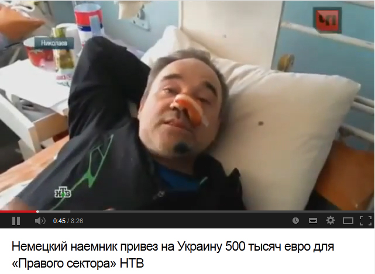
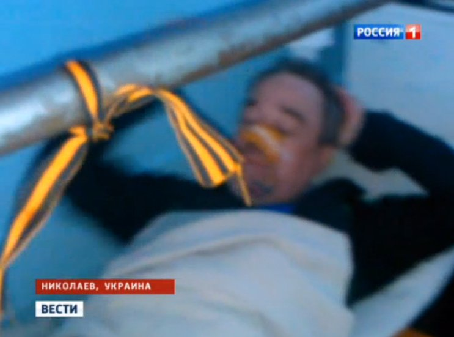
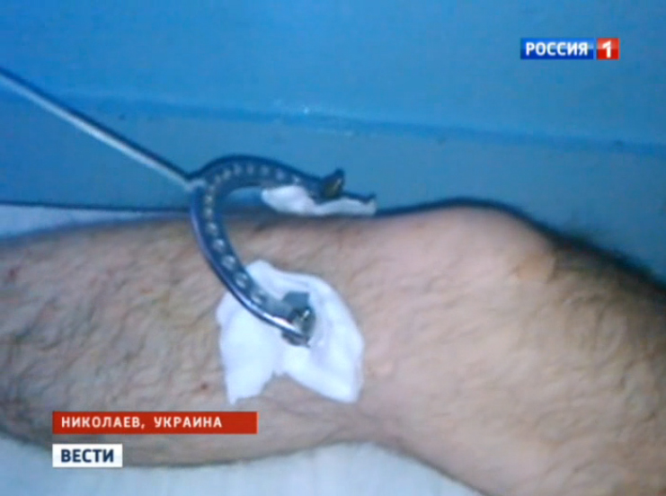

НТВ придумал историю о немецком наемнике, который привез на Майдан 500 тыс.евро
ПРОДОЛЖЕНИЕ: Канал «Россия 1» обвинил украинские СМИ во лжи, которую распространил российский канал НТВ
Российский телеканал НТВ показал в своем эфире «сенсационное признание гражданина Германии» Андрея Петхова, который привез на николаевский Майдан 500 тысяч евро и готовил к силовым акциям группу из 50 граждан Западной Европы.
Сам «немец», который якобы в 1992 году выехал из Украины в Германию, заявил, что на эти деньги заказал для майдановцев «в Военторге нашем» 50 комплектов обмундирования, которые должны были быть готовы через неделю.https://www.youtube.com/watch?v=ckqF_1MJb-w Материал на сайте НТВ: http://www.ntv.ru/novosti/895499/
Ведущий также утверждает, что «человек, который сейчас находится в больнице под охраной, выступал на стороне Правого сектора» и основная цель его группы состояла в том, чтобы покалечить максимальное число мирных митингующих.
Однако, как говорится в сюжете, потом Петхов попал в эпицентр противостояния, во время которого получил ранения и, стало быть, пересмотрел свои взгляды.
В сюжете НТВ есть целый ряд вопиющих несоответствий, которые делают все сделанные в нем утверждения крайне сомнительными.
Во-первых, в начале сюжета ведущий говорит о том, что «наемник» является «лишь передаточным звеном в сложной финансовой схеме», но позднее (на видео 5:25) сам Петков говорит, что эти 500 тысяч евро — его личные деньги, поскольку он якобы является успешным немецким врачом.Вопрос о том, почему столь состоятельный и щедрый человек решил лечиться в откровенно бедной (судя по видео) больнице, остается нераскрытым.
Далее — утверждение о немецком гражданстве Петхова не имеет ничего общего с реальностью.
Очевидно, он решил стать героем сразу несколько ведущих российских каналов — коллеги телеканала НТВ из «России 1» также сделали о нем сюжет, но ни о каком немецком гражданстве, сумме в полмиллиона евро и отношениях с Правым сектором не упоминали.Они заявили, что «7 апреля Андрей как обычно пришел на центральную площадь в открытую заявить о том, что не доволен действиями новой власти».Более того, на кадре «России 1» возле кровати Петхова повязана георгиевская ленточка.
Также на видео НТВ (4:40), рассказывая о жестоких издевательствах со стороны радикалов, которые, очевидно, не узнали своего столь щедрого спонсора и решили его избить, Петхов говорит, что просил у них пощады на немецком и кричал «нихт шизен» (очевидно, имеется ввиду фраза «не стрелять»).На самом деле правильно говорить «нихт шиссен» (nicht schießen).Ни один человек, хорошо знающий немецкий язык, не допустил бы такой ошибки.Не говоря уже о том, что после 22 лет жизни в Германии у нашего героя нет даже намека на немецкий акцент или смещенное построение предложений.
На 6:25 видео НТВ, отвечая на вопрос репортера о том, является ли Петхов гражданином Германии, он мгновенно отвечает «нет», но потом, вспомнив о мифе, рассказывает, что имеет паспорта сразу четырех стран — «Германии, Украины, России и так далее».Это при том, что ни Украина, ни, тем более, Германия не допускают двойное гражданство (в Германии это возможно лишь в виде очень редкого исключения).
На 4:50 Петхов называет себя хирургом, а на 7:07 уже утверждает, что имеет 15 клиник по всей Германии, где занимается геронтологией.Потом сразу же говорит, что работает в Швейцарии, где делает стариков счастливыми.
На 2:44 пострадавший, жалуется на то, что у него сломана нога, причем это — «перелом от выстрела» и ему требуется сложная операция.На 4:33 он уточняет, что у него «страшный перелом ноги, со смещениями, с осложнениями и так далее».Очевидно, этот момент сотрудники НТВ также забыли согласовать с каналом «Россия 1» — последний тоже решил рассказать об этом переломе и даже показал саму ногу.Оказывается, «страшный перелом со смещениями и осложнениями» выглядит так:
На 3:00 Петхов также утверждает, что ему предстоит операция на носу, объясняя это такими словами: «Мне хотели отстрелить нос.Он наставил пистолет.Я выбил его в последний момент.У меня ожог».При этом на 4:15 «немец» рассказывает, что «два отморозка в балаклавах» стреляли ему в лицо и попали в нос и подбородок.О том, что он выбил пистолет, речь больше не идет.
Команда StopFake желает гражданину Германии Андрею Петхову скорейшего выздоровления, а российским журналистам — хоть немного креатива.
Posted On: 2014-04-09T21:00:00



Content Date: 2014-04-09
Download Date: 2021-07-16
Document ID: L0C04FAML